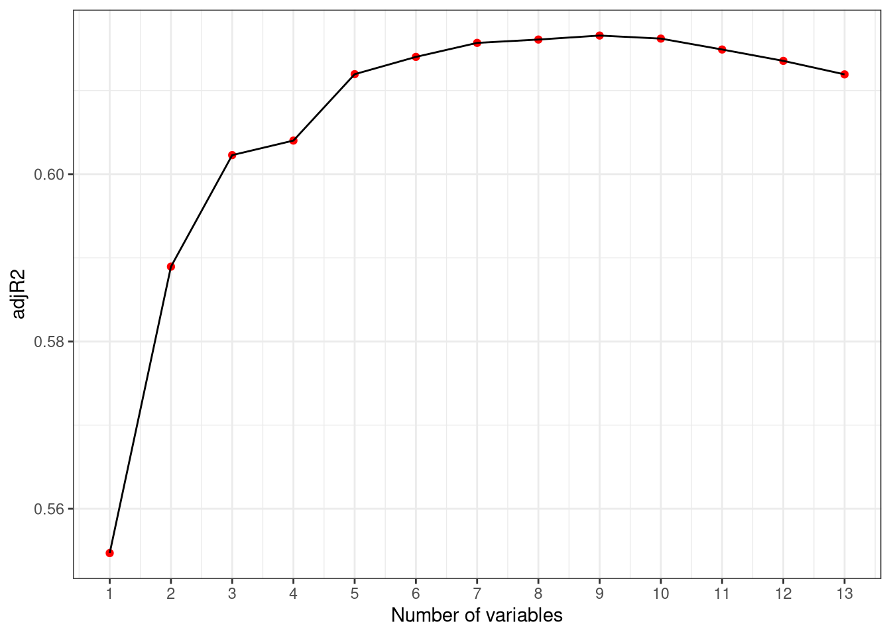
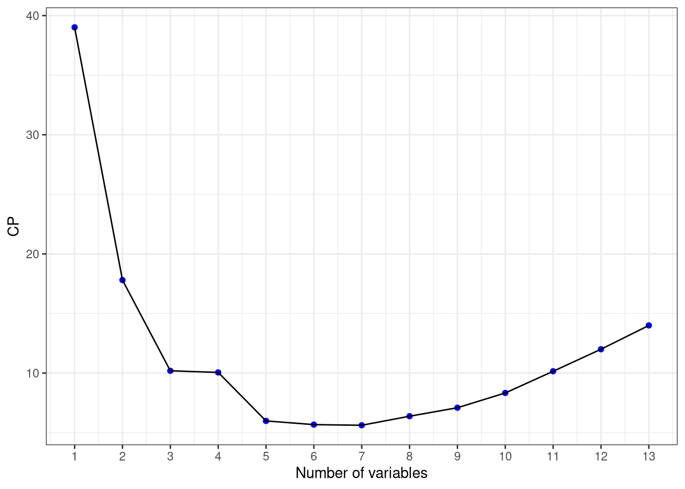
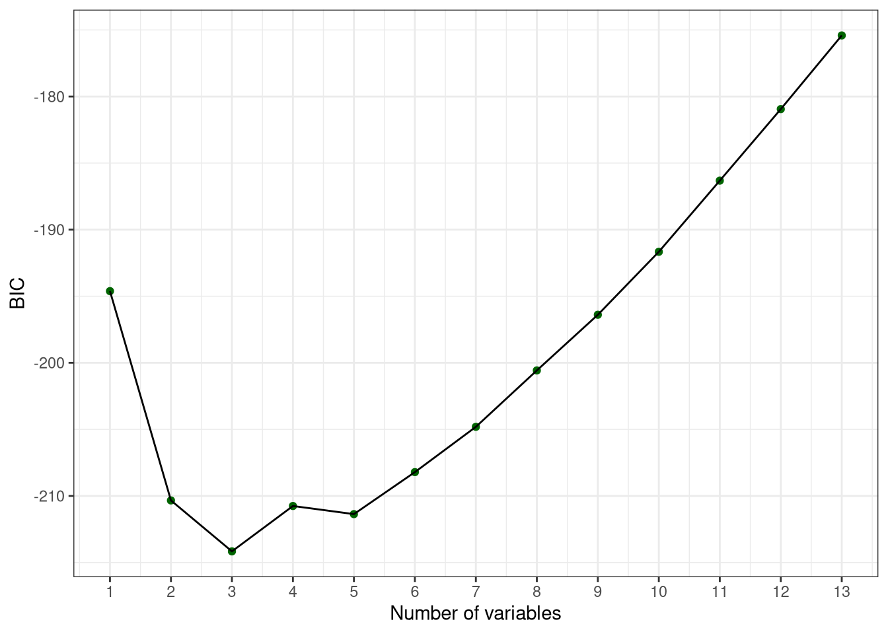
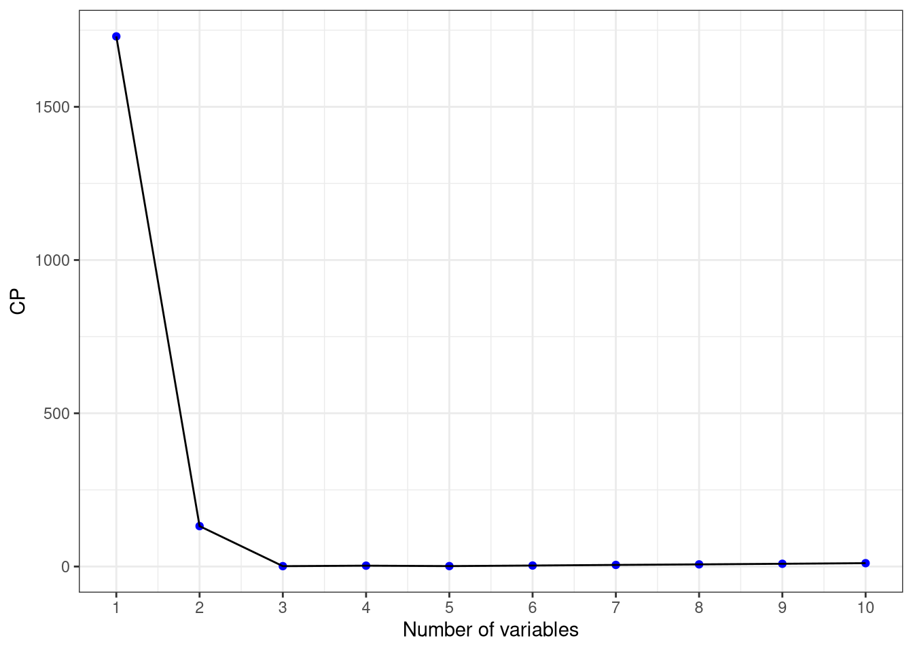
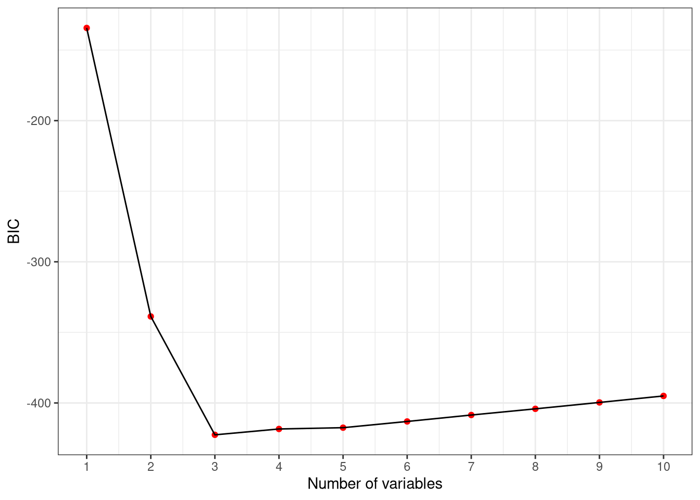
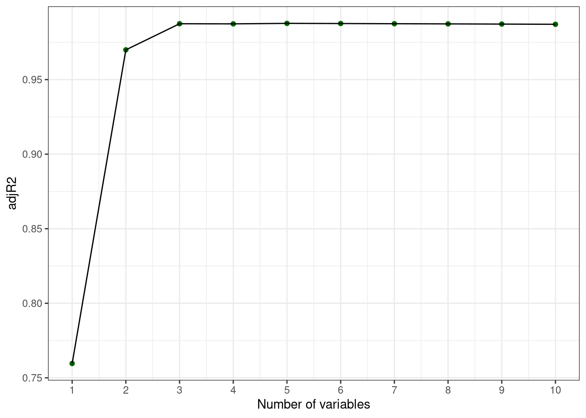

Hw10Answer
############################################################
# Homework
# Chapter 6 - Linear Model Selection and Regularization
############################################################
knitr::opts_chunk$set(echo = TRUE)
library(ggplot2)
library(ISLR)
library(MASS)
library(leaps)
library(glmnet)## Loading required package: Matrix## Loaded glmnet 4.1-10############################################################
# 1) Predict per capita crime rate in the Boston data set
############################################################
data(Boston)
names(Boston)## [1] "crim" "zn" "indus" "chas" "nox" "rm" "age"
## [8] "dis" "rad" "tax" "ptratio" "black" "lstat" "medv"dim(Boston)## [1] 506 14head(Boston)## crim zn indus chas nox rm age dis rad tax ptratio black lstat
## 1 0.00632 18 2.31 0 0.538 6.575 65.2 4.0900 1 296 15.3 396.90 4.98
## 2 0.02731 0 7.07 0 0.469 6.421 78.9 4.9671 2 242 17.8 396.90 9.14
## 3 0.02729 0 7.07 0 0.469 7.185 61.1 4.9671 2 242 17.8 392.83 4.03
## 4 0.03237 0 2.18 0 0.458 6.998 45.8 6.0622 3 222 18.7 394.63 2.94
## 5 0.06905 0 2.18 0 0.458 7.147 54.2 6.0622 3 222 18.7 396.90 5.33
## 6 0.02985 0 2.18 0 0.458 6.430 58.7 6.0622 3 222 18.7 394.12 5.21
## medv
## 1 24.0
## 2 21.6
## 3 34.7
## 4 33.4
## 5 36.2
## 6 28.7?Boston
set.seed(2026)
train <- sample(1:nrow(Boston), nrow(Boston)/2)
test <- (-train)
Boston.train <- Boston[train, ]
Boston.test <- Boston[test]
############################################################
# Best subset selection
############################################################
regfit <- regsubsets(crim ~ ., data = Boston.train, nvmax = 13)
reg_summary <- summary(regfit)
names(reg_summary)## [1] "which" "rsq" "rss" "adjr2" "cp" "bic" "outmat" "obj"reg_summary$cp## [1] 39.015602 17.807748 10.191700 10.055914 5.984885 5.674122 5.620910
## [8] 6.380961 7.092859 8.331998 10.152672 12.000779 14.000000reg_summary$bic## [1] -194.6171 -210.3384 -214.1632 -210.7562 -211.3665 -208.2113 -204.8099
## [8] -200.5728 -196.3932 -191.6628 -186.3190 -180.9464 -175.4138reg_summary$adjr2## [1] 0.5546984 0.5889425 0.6022784 0.6040168 0.6119521 0.6140199 0.6156967
## [8] 0.6160938 0.6165710 0.6162067 0.6149030 0.6135440 0.6119283which.min(reg_summary$cp)## [1] 7which.min(reg_summary$bic)## [1] 3which.max(reg_summary$adjr2)## [1] 9coef(regfit, which.min(reg_summary$cp))## (Intercept) zn nox dis rad ptratio
## 17.19797009 0.02774213 -8.02858262 -0.71748470 0.44855429 -0.22713664
## black medv
## -0.01210287 -0.13137647coef(regfit, which.min(reg_summary$bic))## (Intercept) rad black lstat
## 1.83503161 0.42470541 -0.01199417 0.11905384coef(regfit, which.max(reg_summary$adjr2))## (Intercept) zn nox rm dis rad
## 21.214006893 0.033473870 -7.352180402 -0.620047873 -0.765016529 0.507838175
## tax ptratio black medv
## -0.004065564 -0.207460442 -0.012509717 -0.108337854data <- data.frame(adjR2 = reg_summary$adjr2, numVar = seq(1,13))
ggplot(data, aes(y = adjR2, x = numVar)) +
geom_point(color = "Red") +
geom_line() +
theme_bw() +
scale_x_continuous(breaks = c(1:13), name = "Number of variables")
data <- data.frame(CP = reg_summary$cp, numVar = seq(1,13))
ggplot(data, aes(y = CP, x = numVar)) +
geom_point(color = "Blue") +
geom_line() +
theme_bw() +
scale_x_continuous(breaks = c(1:13), name = "Number of variables")
data <- data.frame(BIC = reg_summary$bic, numVar = seq(1,13))
ggplot(data, aes(y = BIC, x = numVar)) +
geom_point(color = "Dark Green") +
geom_line() +
theme_bw() +
scale_x_continuous(breaks = c(1:13), name = "Number of variables")
## Forward Stepwise Selection
regfit_fwd <- regsubsets(crim ~ ., data = Boston.train,
nvmax = 13, method = "forward")
fwd_summary <- summary(regfit_fwd)
fwd_summary ## Subset selection object
## Call: regsubsets.formula(crim ~ ., data = Boston.train, nvmax = 13,
## method = "forward")
## 13 Variables (and intercept)
## Forced in Forced out
## zn FALSE FALSE
## indus FALSE FALSE
## chas FALSE FALSE
## nox FALSE FALSE
## rm FALSE FALSE
## age FALSE FALSE
## dis FALSE FALSE
## rad FALSE FALSE
## tax FALSE FALSE
## ptratio FALSE FALSE
## black FALSE FALSE
## lstat FALSE FALSE
## medv FALSE FALSE
## 1 subsets of each size up to 13
## Selection Algorithm: forward
## zn indus chas nox rm age dis rad tax ptratio black lstat medv
## 1 ( 1 ) " " " " " " " " " " " " " " "*" " " " " " " " " " "
## 2 ( 1 ) " " " " " " " " " " " " " " "*" " " " " "*" " " " "
## 3 ( 1 ) " " " " " " " " " " " " " " "*" " " " " "*" "*" " "
## 4 ( 1 ) " " " " " " " " " " " " " " "*" " " " " "*" "*" "*"
## 5 ( 1 ) " " " " " " " " " " " " "*" "*" " " " " "*" "*" "*"
## 6 ( 1 ) "*" " " " " " " " " " " "*" "*" " " " " "*" "*" "*"
## 7 ( 1 ) "*" " " " " "*" " " " " "*" "*" " " " " "*" "*" "*"
## 8 ( 1 ) "*" " " " " "*" " " " " "*" "*" " " "*" "*" "*" "*"
## 9 ( 1 ) "*" " " " " "*" " " " " "*" "*" "*" "*" "*" "*" "*"
## 10 ( 1 ) "*" " " " " "*" "*" " " "*" "*" "*" "*" "*" "*" "*"
## 11 ( 1 ) "*" " " " " "*" "*" "*" "*" "*" "*" "*" "*" "*" "*"
## 12 ( 1 ) "*" " " "*" "*" "*" "*" "*" "*" "*" "*" "*" "*" "*"
## 13 ( 1 ) "*" "*" "*" "*" "*" "*" "*" "*" "*" "*" "*" "*" "*"which.min(fwd_summary$cp)## [1] 7which.min(fwd_summary$bic)## [1] 3coef(regfit_fwd, which.min(fwd_summary$cp))## (Intercept) zn nox dis rad black
## 10.31354212 0.03348107 -6.16201628 -0.64447204 0.42218750 -0.01211967
## lstat medv
## 0.04352237 -0.08730874coef(regfit_fwd, which.min(fwd_summary$bic))## (Intercept) rad black lstat
## 1.83503161 0.42470541 -0.01199417 0.11905384## Backward Elemination
regfit_bwd <- regsubsets(crim ~ ., data = Boston.train,
nvmax = 13, method = "backward")
bwd_summary <- summary(regfit_bwd)
which.min(bwd_summary$cp)## [1] 7which.min(bwd_summary$bic)## [1] 3coef(regfit_bwd, which.min(bwd_summary$cp))## (Intercept) zn nox dis rad ptratio
## 17.19797009 0.02774213 -8.02858262 -0.71748470 0.44855429 -0.22713664
## black medv
## -0.01210287 -0.13137647coef(regfit_bwd, which.min(bwd_summary$bic))## (Intercept) rad black medv
## 5.33399572 0.43968482 -0.01293127 -0.07926857#Ridge Regression
library(MASS)
library(glmnet)
data(Boston)
set.seed(1)
train <- sample(1:nrow(Boston), nrow(Boston)/2)
test <- (-train)
x <- model.matrix(crim ~ ., Boston)[, -1]
y <- Boston$crim
x.train <- x[train, ]
x.test <- x[test, ]
y.train <- y[train]
y.test <- y[test]
grid <- 10^seq(10, -2, length = 100)
ridge_model <- glmnet(x.train, y.train, alpha = 0, lambda = grid)
cv_ridge <- cv.glmnet(x.train, y.train, alpha = 0, lambda = grid)
bestlam <- cv_ridge$lambda.min
bestlam## [1] 0.2848036ridge_pred <- predict(ridge_model, s = bestlam, newx = x.test)
mean((y.test - ridge_pred)^2)## [1] 41.11039coef(ridge_model, s = bestlam)## 14 x 1 sparse Matrix of class "dgCMatrix"
## s=0.2848036
## (Intercept) 18.140757808
## zn 0.038173197
## indus -0.128810638
## chas -0.635484698
## nox -7.786504040
## rm 0.313622767
## age -0.006252433
## dis -0.905109443
## rad 0.501074876
## tax 0.000604591
## ptratio -0.372650784
## black -0.013395992
## lstat 0.270010867
## medv -0.170623733#Lasso Regression
lasso_model <- glmnet(x.train, y.train, alpha = 1, lambda = grid)
cv_lasso <- cv.glmnet(x.train, y.train, alpha = 1)
bestlam <- cv_lasso$lambda.min
bestlam## [1] 0.06805595#Predictions + Test MSE
lasso_pred <- predict(lasso_model, s = bestlam, newx = x.test)
mean((y.test - lasso_pred)^2)## [1] 40.89875#Coefficients:
predict(lasso_model, type = "coefficients", s = bestlam)## 14 x 1 sparse Matrix of class "dgCMatrix"
## s=0.06805595
## (Intercept) 1.767486e+01
## zn 3.528237e-02
## indus -1.180702e-01
## chas -4.322661e-01
## nox -7.207686e+00
## rm 4.075291e-02
## age -6.850447e-05
## dis -7.699866e-01
## rad 5.243530e-01
## tax .
## ptratio -3.504167e-01
## black -1.307812e-02
## lstat 2.552919e-01
## medv -1.480791e-01Q2
############################################################
# 2) Simulation and best subset selection
############################################################
library(leaps)
library(ggplot2)
set.seed(2026)
n <- 100
x <- rnorm(n)
eps <- rnorm(n)beta0 <- 1
beta1 <- 2
beta2 <- -3
beta3 <- 1.5
y <- beta0 + beta1*x + beta2*x^2 + beta3*x^3 + epssim.data <- data.frame(
y = y,
x1 = x,
x2 = x^2,
x3 = x^3,
x4 = x^4,
x5 = x^5,
x6 = x^6,
x7 = x^7,
x8 = x^8,
x9 = x^9,
x10 = x^10
)
head(sim.data)## y x1 x2 x3 x4 x5
## 1 2.6560353 0.52058907 0.271012983 0.141086397 7.344804e-02 3.823625e-02
## 2 -7.0383665 -1.07969076 1.165732142 -1.258630225 1.358931e+00 -1.467226e+00
## 3 0.9965789 0.13923812 0.019387253 0.002699445 3.758656e-04 5.233481e-05
## 4 -0.3036066 -0.08474878 0.007182357 -0.000608696 5.158625e-05 -4.371872e-06
## 5 -1.1150616 -0.66663962 0.444408377 -0.296260229 1.974988e-01 -1.316605e-01
## 6 -46.3553836 -2.51608903 6.330704017 -15.928614942 4.007781e+01 -1.008393e+02
## x6 x7 x8 x9 x10
## 1 1.990537e-02 1.036252e-02 5.394614e-03 2.808377e-03 1.462010e-03
## 2 1.584150e+00 -1.710392e+00 1.846695e+00 -1.993859e+00 2.152751e+00
## 3 7.287001e-06 1.014628e-06 1.412749e-07 1.967085e-08 2.738933e-09
## 4 3.705108e-07 -3.140034e-08 2.661141e-09 -2.255284e-10 1.911326e-11
## 5 8.777012e-02 -5.851104e-02 3.900578e-02 -2.600280e-02 1.733449e-02
## 6 2.537208e+02 -6.383841e+02 1.606231e+03 -4.041421e+03 1.016857e+04Best subset selection ############################################################
regfit <- regsubsets(y ~ ., data = sim.data, nvmax = 10)
reg_summary <- summary(regfit)
reg_summary$cp## [1] 1729.690361 131.873267 1.267560 2.843273 1.477805 3.301974
## [7] 5.266254 7.066483 9.000037 11.000000reg_summary$bic## [1] -134.3484 -338.7172 -422.5622 -418.4130 -417.5000 -413.0916 -408.5264
## [8] -404.1453 -399.6147 -395.0096reg_summary$adjr2## [1] 0.7595962 0.9699508 0.9874628 0.9873885 0.9877163 0.9876087 0.9874790
## [8] 0.9873697 0.9872389 0.9870955which.min(reg_summary$cp)## [1] 3coef(regfit, which.min(reg_summary$cp))## (Intercept) x1 x2 x3
## 1.199541 1.982978 -3.082474 1.483252which.min(reg_summary$bic)## [1] 3coef(regfit, which.min(reg_summary$bic))## (Intercept) x1 x2 x3
## 1.199541 1.982978 -3.082474 1.483252which.max(reg_summary$adjr2)## [1] 5coef(regfit, which.max(reg_summary$adjr2))## (Intercept) x1 x2 x3 x7 x9
## 1.153458376 1.505035961 -3.021550423 2.014648454 -0.060698709 0.007851161data <- data.frame(CP = reg_summary$cp, numVar = seq(1,10))
ggplot(data, aes(y = CP, x = numVar)) +
geom_point(color = "Blue") +
geom_line() +
theme_bw() +
scale_x_continuous(breaks = c(1:10), name = "Number of variables")
data <- data.frame(BIC = reg_summary$bic, numVar = seq(1,10))
ggplot(data, aes(y = BIC, x = numVar)) +
geom_point(color = "Red") +
geom_line() +
theme_bw() +
scale_x_continuous(breaks = c(1:10), name = "Number of variables")
data <- data.frame(adjR2 = reg_summary$adjr2, numVar = seq(1,10))
ggplot(data, aes(y = adjR2, x = numVar)) +
geom_point(color = "Dark Green") +
geom_line() +
theme_bw() +
scale_x_continuous(breaks = c(1:10), name = "Number of variables")
Forward selection ############################################################
regfit_fwd <- regsubsets(y ~ ., data = sim.data, nvmax = 10, method = "forward")
fwd_summary <- summary(regfit_fwd)
which.min(fwd_summary$cp)## [1] 3coef(regfit_fwd, which.min(fwd_summary$cp))## (Intercept) x1 x2 x3
## 1.199541 1.982978 -3.082474 1.483252which.min(fwd_summary$bic)## [1] 3coef(regfit_fwd, which.min(fwd_summary$bic))## (Intercept) x1 x2 x3
## 1.199541 1.982978 -3.082474 1.483252which.max(fwd_summary$adjr2)## [1] 5coef(regfit_fwd, which.max(fwd_summary$adjr2))## (Intercept) x1 x2 x3 x5 x9
## 1.164872842 1.368848580 -3.035187795 2.375792387 -0.248422576 0.003112008Backward selection ############################################################
regfit_bwd <- regsubsets(y ~ ., data = sim.data, nvmax = 10, method = "backward")
bwd_summary <- summary(regfit_bwd)
which.min(bwd_summary$cp)## [1] 3coef(regfit_bwd, which.min(bwd_summary$cp))## (Intercept) x1 x2 x3
## 1.199541 1.982978 -3.082474 1.483252which.min(bwd_summary$bic)## [1] 3coef(regfit_bwd, which.min(bwd_summary$bic))## (Intercept) x1 x2 x3
## 1.199541 1.982978 -3.082474 1.483252which.max(bwd_summary$adjr2)## [1] 5coef(regfit_bwd, which.max(bwd_summary$adjr2))## (Intercept) x1 x2 x3 x7 x9
## 1.153458376 1.505035961 -3.021550423 2.014648454 -0.060698709 0.007851161The true model contains \(x\), \(x^2\), and \(x^3\). I used best subset selection, forward selection, and backward selection to choose among models containing \(x, x^2, \dots, x^{10}\). I compared the models using \(C_p\), BIC, and adjusted \(R^2\). The best models should be close to the true cubic model, so I expect the selected predictors to include mainly \(x\), \(x^2\), and \(x^3\).
Lasanthi Watagoda
Assistant Professor of Statistics
lasanthi@appstate.edu


Mailing Address
Appalachian State University
Department of Mathematical Sciences
Walker Hall 340
121 Bodenheimer Dr
Boone, NC 28608